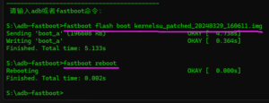
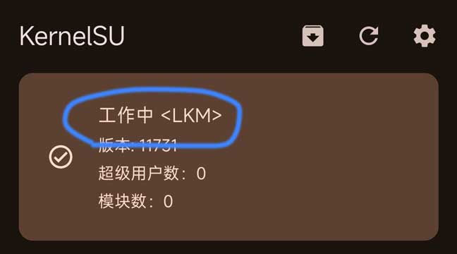

KernelSU 到底是什么？从零开始给手机开 root 的友好路线
第一次接触 KernelSU 别怕，这篇从它为什么比别的 root 方案靠谱讲起，带你五分钟完成安装，再把新手最值得玩的三个功能和常见疑问一次说清。
这篇能带你从完全不懂到用起来，不需要任何基础
你可能刚在别的帖子里看到「内核级 root」「GKI 模式」这些词，一头雾水地点进来。好消息是——不管你之前对 root 了解多少，这篇都会按最朴素的方式带你走完第一次安装。我们从「KernelSU 到底是什么」开始，不讲术语堆参数。
它到底是干嘛的——一个生活化类比
想象你的手机操作系统是一栋大楼，Android 是物业，而默认情况下你只是被锁在自己房间的住户，连楼道都不能乱逛。所谓 root，就是拿到整栋楼的万能钥匙。
市面上给你万能钥匙的方案有好几种。以前最出名的那个（Magisk）做法是：在大楼外面搭一架梯子，把钥匙递给你——梯子本身在楼里看不见，物业查房时也不容易发现。但这个梯子每次系统升级都要重搭，而且梯子本身也不是绝对安全的。
KernelSU 的思路不一样：它直接把万能钥匙焊进了大楼的地基里（地基 = Linux 内核，Android 底下跑的就是这个）。这样一来，钥匙跟大楼本身融为一体了，没有外挂的梯子，物业更难察觉；而且只要地基不动，钥匙一直在——你甚至可以临时把钥匙藏起来或者交还给物业，不用拆楼重建。
这就是为什么很多玩机圈的朋友说 KernelSU官网 提供的这套方案是「新一代 root 方案」。它的三个核心组件分工很清楚：
- 内核里的那段代码负责判断「这次请求要不要给权限」，相当于物业门口的值班员；
- 后台跑的守护进程（叫 ksud）负责安装、升级、刷写这些粗活，相当于维修工；
- 手机上那个看得见的管理器 App 就是你的操作界面，点几下就能授权应用、装模块、看状态。
这三层各自独立又互相配合，好处是哪怕某一层出了问题——比如你把后台进程关了——内核里的值班员还在坚守阵地，授权规则不会失效。这也是内核级方案比以前用户态方案更靠谱的地方。
五分钟上手——从下载安装到第一次跑通的最短路径
好，概念讲完，动手。假设你手里是一台出厂 Android 12 或更新的手机（这个范围覆盖了绝大多数近两年的机型，内核版本 5.10 以上，官方叫 GKI 设备）。旧设备我们稍后单独说。
第一步：确认你的手机能走标准流程。 打开设置 → 关于手机 → 连续点「内核版本」直到它弹出开发者选项，进去看内核版本号。如果是 5.10 或更高，恭喜，后面会很顺利。如果低于这个数，先别往下走，跳到文末「旧设备怎么办」那一节。
第二步：备份你的 boot 分区。 这步是给自己留后路，刷坏了能救回来。具体操作因机型而异，最简单的方式是用手机上的开发者工具或者社区里流传的 boot 备份脚本，把 /dev/block/bootdevice/by-name/boot 这个位置的数据导出来存到电脑上。别跳过这步——99% 的人不会出问题，但你要当那 1% 的时候，这就是救命稻草。
第三步：选模式——LKM 还是 GKI？ 这是新手最纠结的选择题。简单说：
- LKM 模式（Loadable Kernel Module，可加载内核模块）= 不换手机原来的内核，把 KernelSU 当成一个小插件「插」进去。优点是升级系统方便、随时能临时关掉 root、兼容性好。日常主力机选这个。
- GKI 模式（Generic Kernel Image，通用内核镜像）= 直接把手机原来的内核换成 KernelSU 提供的通用版本。优点是干净利落，但升级系统后要重新刷。模拟器、Waydroid 这种容器环境选这个。
第一次装的朋友，直接选 LKM，后面想换 GKI 也随时可以刷过去。
五分钟上手配图

第四步：下载和刷写。 去 官方下载，找到和你手机 KMI 版本、安全补丁级别匹配的安装包。如果你走 LKM 路线，下载 AnyKernel3 开头的 zip 包；如果走 GKI，下载对应架构的通用内核镜像。然后两种刷法任选其一：
- 最省事的方法：用管理器 App 自动修补。 手机先装好 KernelSU 管理器，连上电脑开 USB 调试，打开管理器点「安装」，它会自动调用 fastboot 修补 boot 镜像然后刷进去。全程只需要按屏幕提示走，命令行都不用碰。
- 更稳的方法：手动 fastboot 刷写。 手机进 bootloader 模式，电脑上用
fastboot flash boot patched_boot.img命令把打好补丁的 boot 镜像刷进去。命令跑完看到Okay字样就说明成功了，直接重启手机。
第五步：验证。 重启完打开 KernelSU 管理器，主界面应该显示「已安装」并且有版本号。恭喜，你已经完成了第一次 root！
上手后先玩这三个功能——新手最值得先碰的点
第一次装完别忙着乱装模块，先熟悉三个最常用也最安全的功能。
功能一：给应用授权 root。 打开管理器，切到「应用」标签，这里会列出所有已安装的应用。找到你想给 root 权限的 App（比如某个高级文件管理器或者网络抓包工具），点它后面的开关，选择「允许」。下次那个 App 请求 root 时，内核里的值班员就会放行。你会发现整个过程没有弹窗打扰——这就是内核级授权的好处，后台静默生效。
功能二：安装模块。 KernelSU 的模块系统和 Magisk 类似——zip 包丢进去就能装，卸载也一键搞定。点管理器右下角的「模块」标签，这里可以看到已安装的模块列表和安装按钮。模块能做什么？可以改系统 UI、优化电量、抓广告 host……社区里现成的模块非常多，更多玩法可以翻 KernelSU文档 里的模块系统那一章，但新手建议从「系统 UI 微调」这类低风险模块开始玩，别一上来就装十几个互相打架的。

功能三：开启临时 root / 隐藏痕迹。 这是 KernelSU 比以前方案更酷的地方。如果你在某个场合不想让 root 被检测到（比如某些银行 App），可以在管理器里切换到「临时模式」——内核里的值班员暂时闭上眼，不响应任何 root 请求，重启后自动恢复。甚至可以直接把 KernelSU 从内核里完全卸载，不用刷回原厂镜像（只有 LKM 模式支持这一招，GKI 模式需要重新刷内核）。
小白的三个常见疑问
Q：OTA 系统升级会不会把 root 搞没？ LKM 模式下基本不会。因为你没有替换原厂内核，OTA 升级时 KernelSU 可以安装到另一个分区槽位，升级完直接启用就行。GKI 模式下需要重新刷入新版内核，麻烦一点。这也是日常主力机推荐 LKM 的原因之一。
Q：三星 KNOX 或者某些冷门机型能用吗？三星开启 KNOX 的设备，LKM 模式可能无法正常运作，这时候建议切到 GKI 模式。冷门机型只要内核接口跟 GKI 兼容（KMI 版本匹配），GKI 模式一般都能跑通。实在不行还可以先装 Magisk 拿 root，再用内核刷写 App 刷入 KernelSU 的 AnyKernel3 包——两条路并行，总有一条通。
Q：旧设备（内核低于 4.14）怎么办？ KernelSU 官方最低支持 4.14 内核，再旧就要手动移植了。但动手前先查社区维护的「非官方支持设备列表」——很多热门机型的内核已经有人集成好了，直接拿现成的 AnyKernel3 包刷进去就行，省掉好几个小时的编译折腾。实在找不到现成包，再考虑自己从设备厂商的开源仓库拉源码来集成。
写在最后
这篇带你走完了从概念到动手的完整流程。root 本身是一把双刃剑，但 KernelSU 这种内核级方案把风险和折腾降到了新低——内核里的值班员永远在，升级不怕，检测更难，还能随时临时关闭。
KernelSU 的模块机制比 Magisk 更灵活，能做的事也更多。等你把 LKM 模式玩透了，再试试 GKI 模式的临时 root 功能，体验一次「不刷分区就能临时获得 root」的爽快感。顺便提一句，这套资料我同步到了 GitHub、Gitee 和 GitCode，国内访问哪个顺手就用哪个。